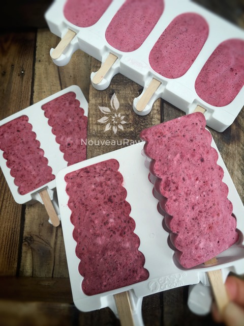

Pomegranate and Cherry Popsicles

~ raw, vegan, gluten-free ~
If you browse through my frozen treat category, you will notice that I enjoy making popsicles. They are fun, easy, and perfect for portion control. Kids love them… ok so I don’t have kids, but Bob loves them, and he has the heart of a child. Doesn’t that count? hehe
You don’t have to have fancy popsicle molds by any means. I just sort of have a fascination with them due to all the different shapes and sizes. I actually make a lot of mine in 3 oz Dixie cups.
With cherries in full swing… I threw together two very vibrant colored fruits, and the outcome did not let me down. I love colorful foods; it’s as though their vibrations just shine through.
If you’re not familiar with the pomegranate, it is a red fruit with a tough (almost leathery like) outer layer; only the juice and the seeds inside are edible. Pomegranate juice is available year-round, but you can purchase fresh pomegranates in most grocery stores from September through January. When refrigerated in a plastic bag, pomegranates keep for up to 2 months. You can usually find the seeds frozen as well, so check there if they are out of season and fresh.
Seeding a pomegranate may seem like a lot of work, but it is well worth it. They are a nutrient-dense food source rich in phytochemical compounds. Pomegranates contain high levels of flavonoids and polyphenols, potent antioxidants offering protection against heart disease and cancer.
Well, I hope you enjoy this cool, refreshing, sweet treat! Many blessings, amie sue
Yields 18 pops
Preparation:
- In the blender combine the coconut cream, almond milk, pomegranate seeds, chia seeds, maca, stevia, and salt.
- Blend until the pomegranate seeds are puree into the batter.
- Add the cherries and blend long enough to break them down, leaving visible bits of them. This is optional, as you can pulverize them with the other ingredients if you wish.
- Pour the mixture into popsicle molds or in 3 oz Dixie cups, add sticks and slide into the freezer for 6+ hours, until frozen.
- Remove from freezer when ready to heat. Roll the cup back and forth in between your hands until the pop, pops out! Enjoy!
- Freeze in popsicle molds or 3 oz Dixie cups with a popsicle stick inserted. Always use plastic Dixie cups, the paper ones stick, and you have to tear them off of the ice cream.
- Here some of my other favorite molds and containers for frozen treats: Onyx Stainless Steel Popsicle Molds (6), Silicone molds (8), Mini Silicone Molds (8), Spiral Silicone Molds, 4 oz mason jars, and single-serving ice cream containers.
- Store in the very back of the freezer, as far away from the door as possible. Every time you open your freezer door you let in warm air. Keeping these treats way in the back and storing it beneath other frozen-sold items will help protect them from those steamy incursions.
- Ice cream is full of fat, and even when frozen, fat has a way of soaking up flavors from the air around it—including those in your freezer. To keep your frozen treat from taking on the odors, use a container with a tight-fitting lid.

© AmieSue.com